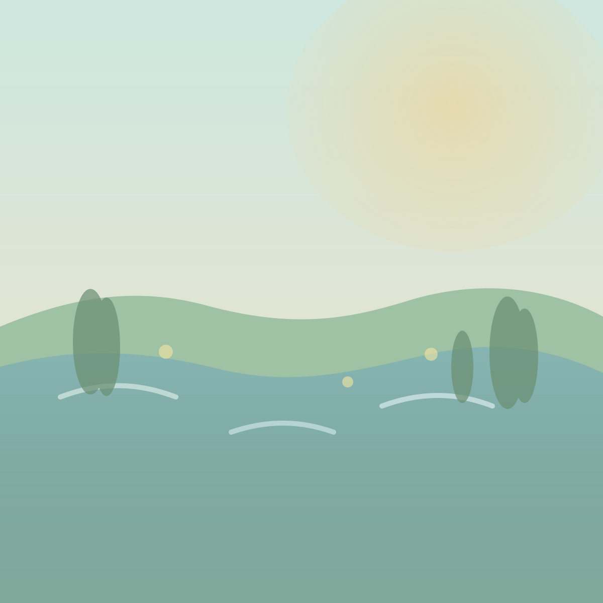
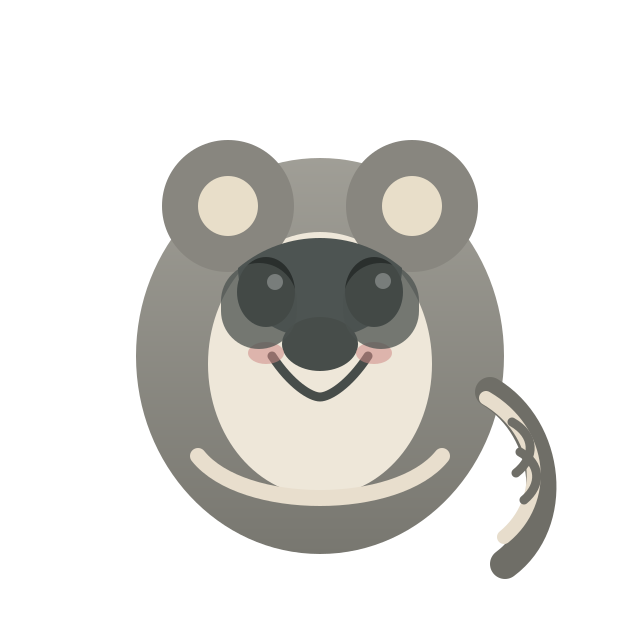
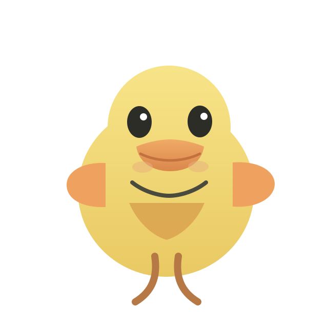
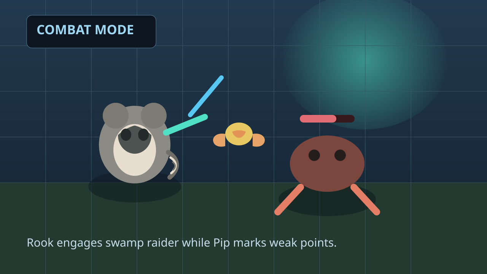
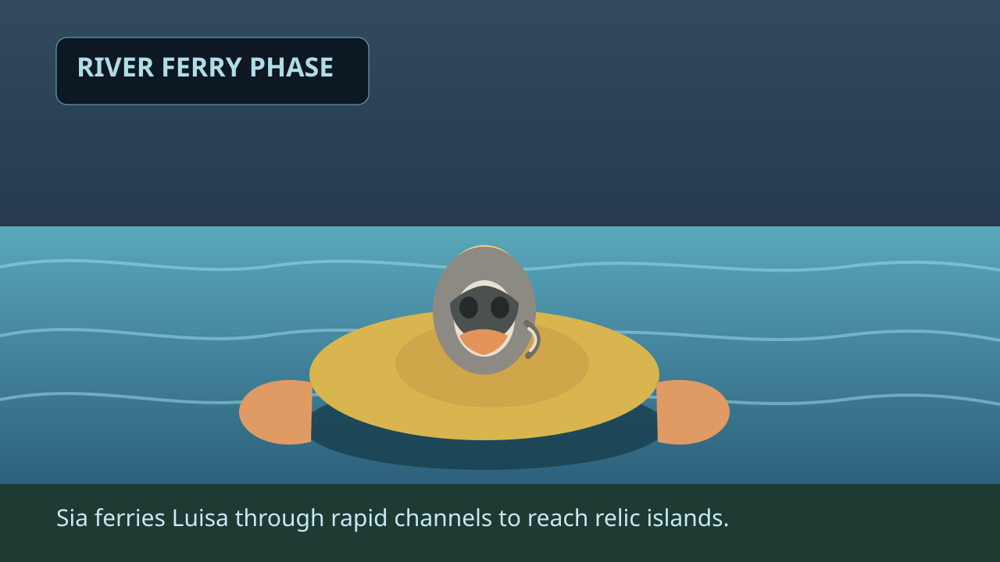
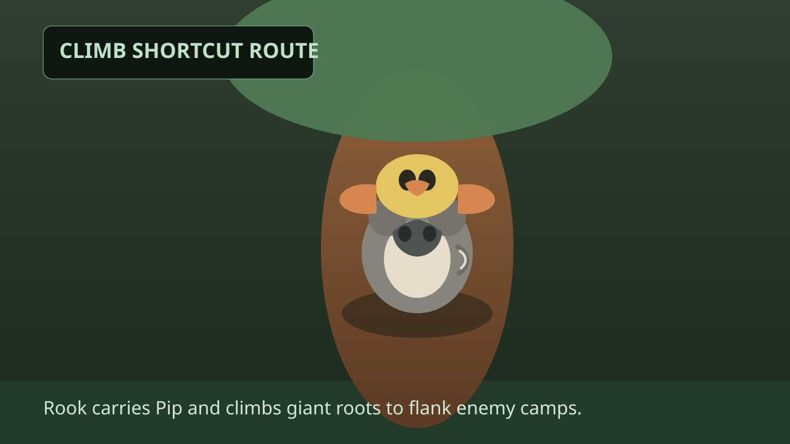
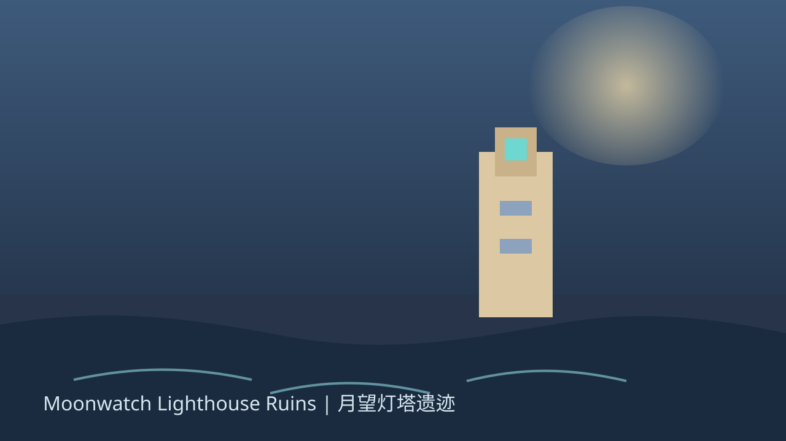
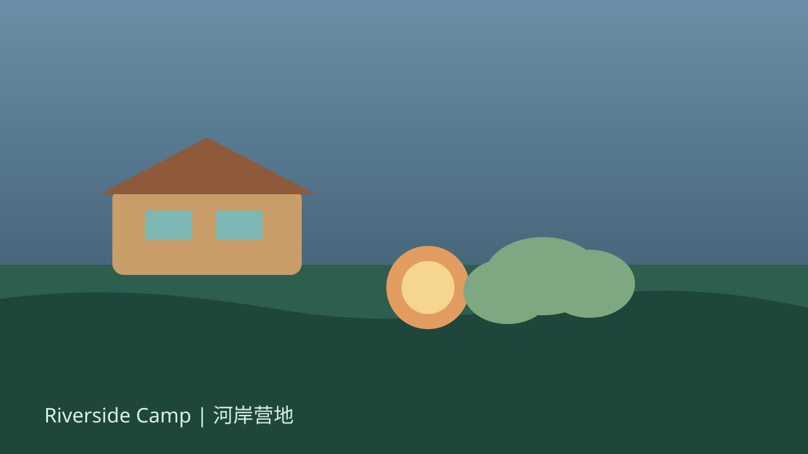
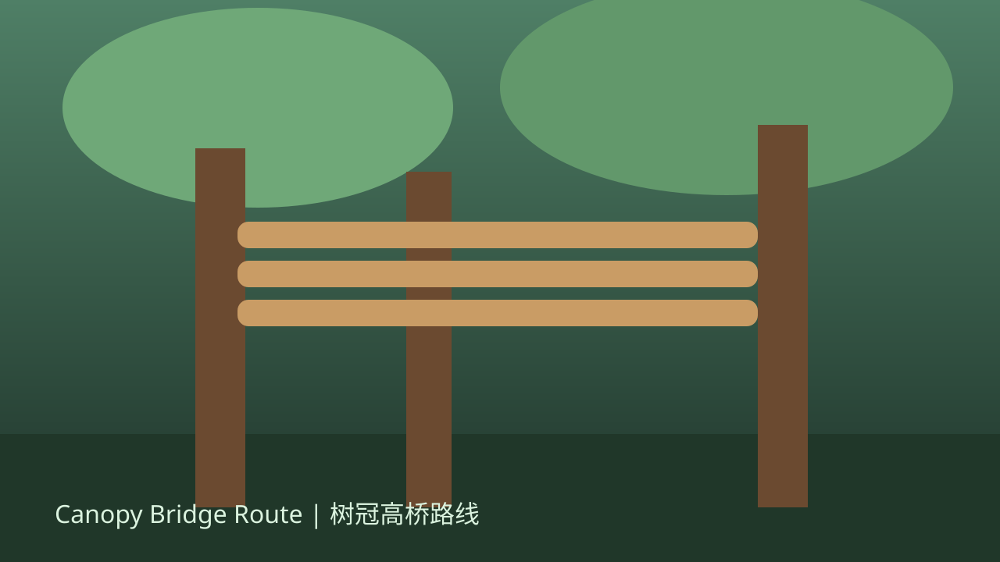
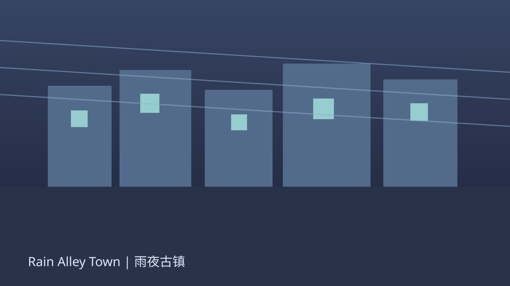

Act I · Lantern Marsh
点亮灯莲航道，护送商队穿越迷雾水网，开启第一段地图修复链。
Cozy Co-op Adventure RPG
一只机灵浣熊 + 一只热心小鸭，穿越会发光的沼泽与失落古桥， 在温馨冒险中找回「月潮罗盘」。 Explore ruins, rescue travelers, and rebuild ancient routes with tactical puzzle choices.



每十年一次的蓝月夜，潮声谷的月潮罗盘会重新校准四季潮汐。今年它消失了。 Luisa Z and Sia Z receive an old distress signal from a broken lighthouse. Their journey turns into a long expedition through flooded rails, ruined observatories, and hidden camps.
点亮灯莲航道，护送商队穿越迷雾水网，开启第一段地图修复链。
在回音石桥上触发节奏机关，利用双角色协作穿过塌陷桥段。
在风暴山脊建立临时营地，完成最终守塔战与罗盘复位。
浣熊负责攀爬、投掷与机关联动；小鸭负责水路侦查、声波标记与远端触发。
将颜色能量覆盖机关节点，形成“路径链”，实时改变关卡结构。
每个区域可回访，包含隐藏任务、救援事件、收藏和技能升级材料。
在营地夜谈中选择语气与回应，影响队友关系值与终章演出分支。
“A surprisingly tactical cozy adventure. Every puddle feels like a puzzle board.”
“Luisa Z and Sia Z have elite duo chemistry; every encounter feels handcrafted.”
“Its watercolor look is gentle, but mission pacing feels like a real expedition game.”
关键场景预览：浣熊战斗、小鸭驮浣熊过河、浣熊背鸭子爬树。



目标：5 分钟左右收集 3 个遗物、击败 4 个敌人并抵达灯塔信标（G）。
前邮差学徒，擅长解锁旧机械与地图修复。喜欢捡垃圾、囤垃圾，背包里总有“有一天会用到”的零件。
航道侦察员，能模仿古钟频率触发机关。最喜欢植物和花，遇到稀有花种会优先做标记再继续冒险。



